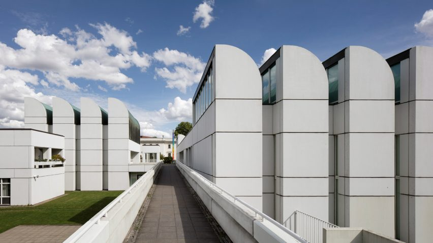
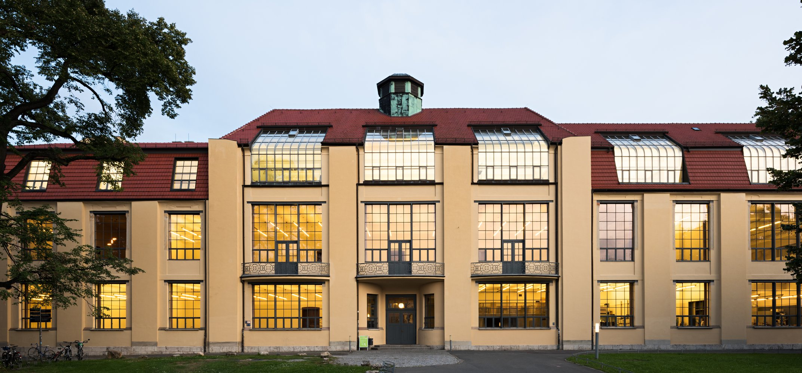
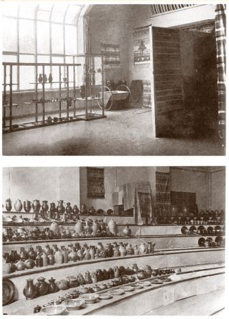
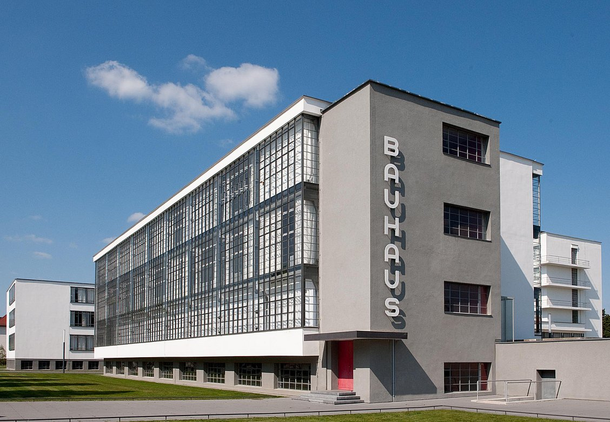
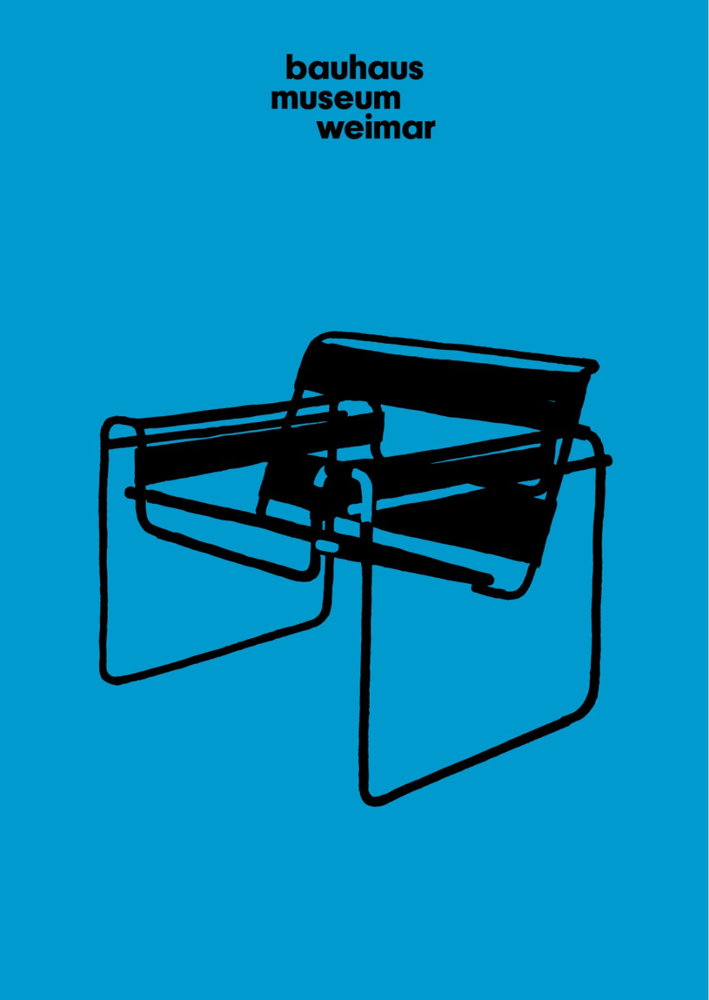
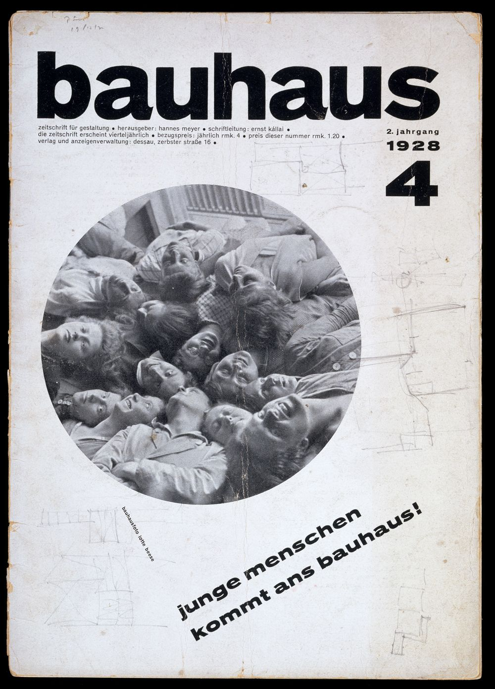
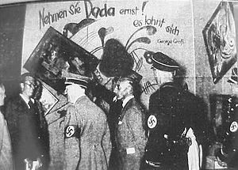
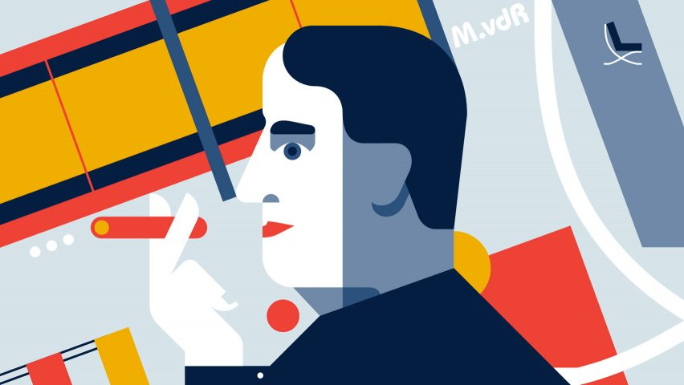
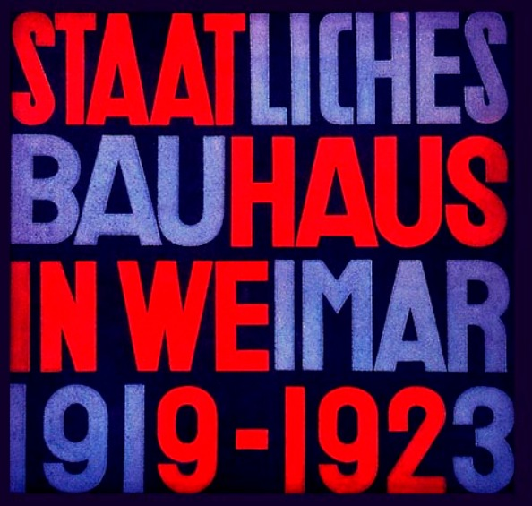
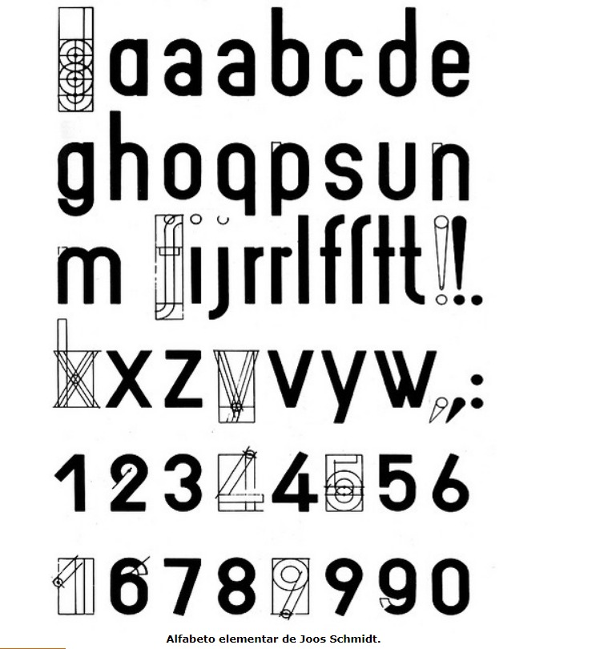

Panorama sobre a Alemanha analisando a história e caminho seguindo pela Bauhaus, uma das maiores e mais importantes escolas do modernismo no design e arquitetura, observando, inclusive, como essa escola deu origem à nova tipografía.
Obs.:O mapa segue a rolagem, você tambem tem a opção de retornar. MODO PAISAGEM É UMA BOA IDEIA.
Em 1914 Walter Gropius assumiu a diretoria da escola, que na época se chama Weimar Arts and Crafts School. No entanto, não assumiu controle efetivamente, levando em consideração que a primeira guerra mundial começou em 1915. Durante o conflito a escola permaneceu fechada. Somente após o final que Gropius pode efetivamente assumir controle da instituição e pode renomear a escola para Das Staatliches Bauhaus. AKA The Bauhaus.
Em 1919 foi publicado o manifesto de Bauhaus. Ele apresentava os princípios de design que a escola seguiria, sendo esses, baseados em pragmatismo e culto à qualidade do processo de criação (craftsmanship). Poderiamos resumir esse manifesto a quatro pontos principais:
Uma característica marcante da filosofia de Gropius para a instituição era a confluência de artistas de diferentes disciplinas. Ele buscava trazer uma nova "espiritualidade" para o design pela integração da escultura, pintura e arquitetura. "To bring new life into the dead products of the machine"
Devido a tensões com o governo de Weimar, Gropius decidiu mudar a escola de Bauhaus para a pequena província de Dessau. O novo edifício foi aberto no outono de 1926, com a ajuda do Mayor de Dessau e tinha Walter Gropius como diretor.
A Bauhaus Corporation foi fundada para vender protótipos para a indústria. As ideias da Bauhaus influenciaram os produtos da indústria que foram encontrados no quotidiano.
A Bauhaus Magazine foi criada juntamente com uma série de 14 livros. Estas publicações influentes foram escritas, editadas e projetadas por Gropius, Kandinsky, Klee, Mondrian, Moholy-Nagy e van Doesburg.
Em 1928 Walter Gropius deixou o cargo de diretor da Bauhaus para para se dedicar a um período sabático. Em 1930 Mies van der Rohe, um proeminente arquiteto de Berlim tomou o cargo de diretor.
Em 1931 os Nazis cancelaram os contratos de financiamento e de faculdade que a escola de Bauhaus tinha com o governo e com isto, Rohe mudou a escola para Berlim e tentou executar a Bauhaus a partir de uma fábrica de telefones abandonada. No dia 10 de agosto de 1933 a escola de Bauhaus fechou por voto do corpo docente.
A escola criou um movimento viável e moderno que incluiu arquitetura, design e comunicações visuais. A escola permitiu que o design fosse usado como meio de mudança a nível social e afetou profundamente o futuro da educação de belas artes e das artes aplicadas.
Na Bauhaus praticou-se uma Tipografia funcionalista, orientada pela estética da nova tipografia. A fonte privilegiada nesta instituição foi a Akzidenz Grotesk.
Na Bauhaus, criaram um sistema de glifos “nus” – nus como uma máquina, livre de embelezamentos, livre de qualquer ideologia da cultura.
A casa de Muche, novo lar da nova Bauhaus tinha como objetivo facilitar a comunicação entre o espaço privado e a convivência público, princípio este, que influenciou tambem o layout das superquadras da capital brasileira.
Com os fechamentos dos contratos estatais da escola com o geverno, a Bauhaus foi fechada e seus estudantes se dispersaram pelo mundo. Esse evento ocorreu na mesma época que o inicio da cidade de Tel Aviv, onde alguns estudantes do instituto encontraram a oportunidade de modelar a cidade aos principios que aprenderam, criando mais de 4000 edificios no estilo